Start Eclipse IDE. Eclipse will display a Workspace Launcher dialog box and ask you to choose a workspace folder. Select a folder or type the pathname of a folder where the workspace needs to be created or is already present.
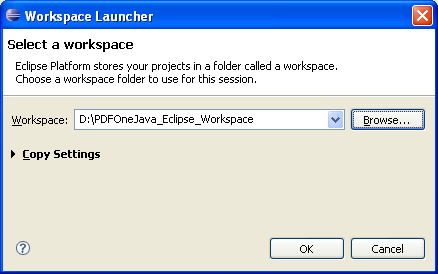If the workspace does not already exist, Eclipse will then create the workspace and then display a Welcome screen.
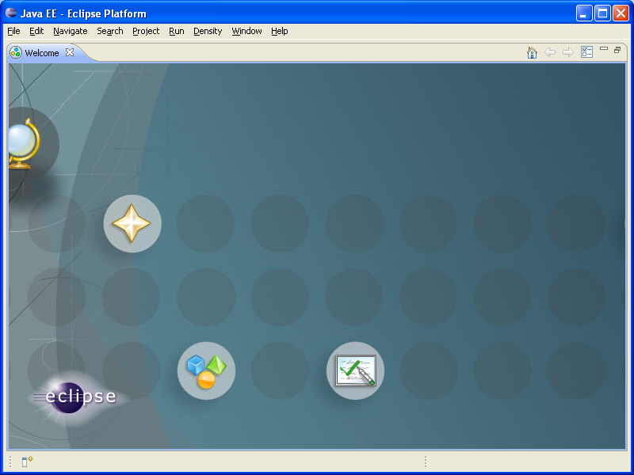From the Eclipse IDE menu, create a new project by selecting File » New » Project.
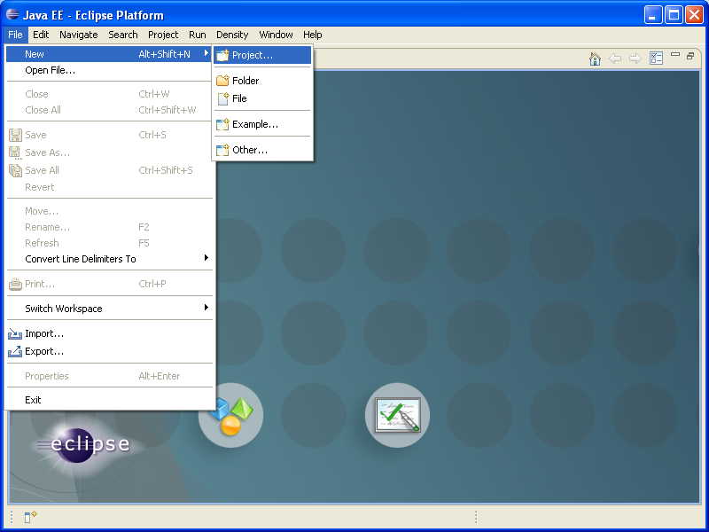Eclipse will then display a A New Project wizard.
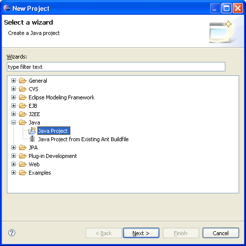In this wizard, select Java » Java Project and click on the Next button. The wizard will display a A New Java Project screen.
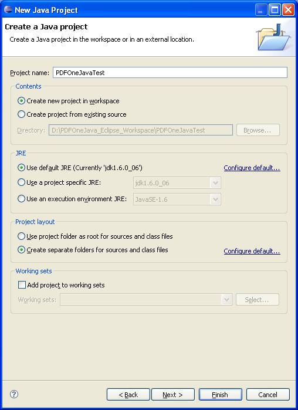In this screen of the wizard, type a name for the project in the Project name text box and click the Finish button. Eclipse will then display a Open Associated Perspective? dialog.
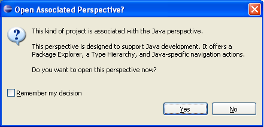To associate the project with the "Java perspective," click Yes. Eclipse will then open your project in Java perspective. Eclipse will display your project directory contents inisde the Package Explorer view on the left.
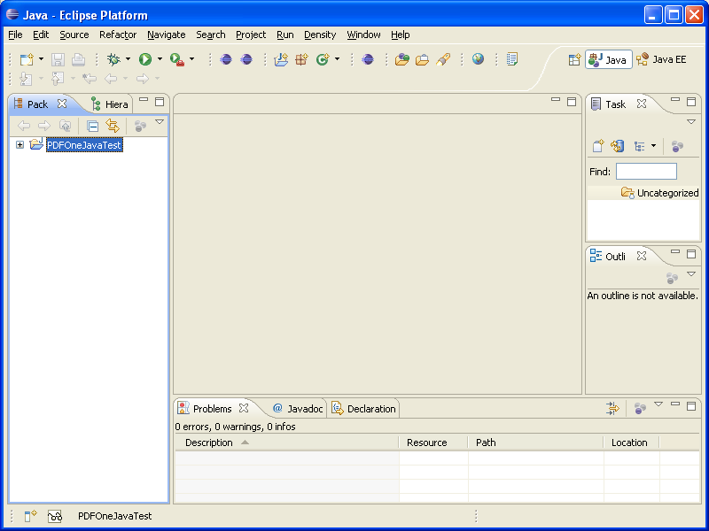To create a new Java program in your project, right-click your project in Package Explorer and select New » Class in the context menu. Eclipse will then display a New Java Class dialog.
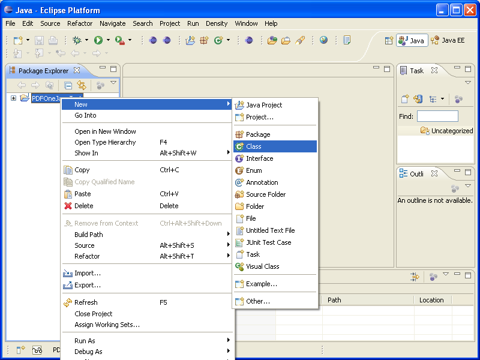Type a name for the class in the Name text box. Type a name for the package where the class needs to be created in the Package text box. Select the Which method stubs would you like to create? » public static void main(String[] args) check box and click Finish.
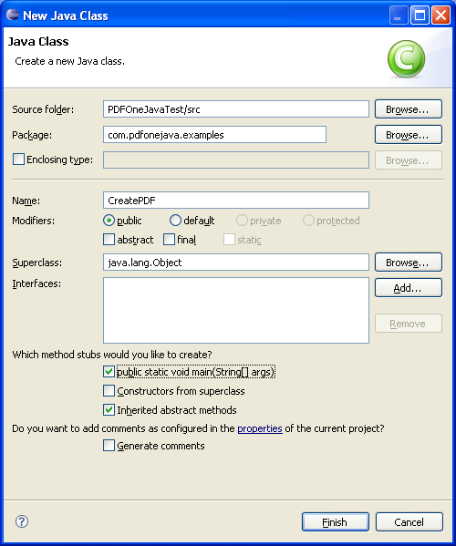Eclipse will then create a package with the name you have specified under your project in Project Explorer. In the code editor view, your class will be displayed with a main method stub.
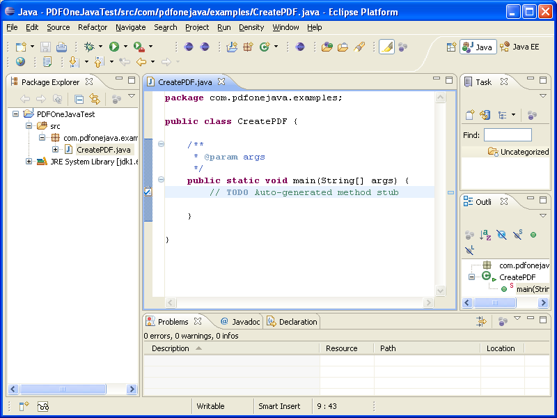To use PDFOne Java in this class, you need to first place PDFOne Java jar file in the build path of your project. For this, right-click your project and select Build Path » Configure Build Path on the context menu.
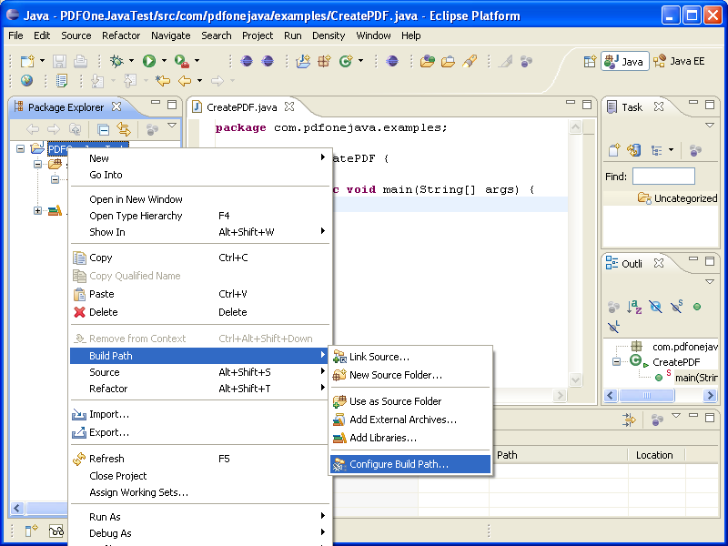In this dialog, click on the Libraries tab.

In this tab, click on Add External JARs... button. Eclipse will then display a JAR Selection dialog.

In this window, navigate to the directory where you have extracted the contents of the PDFOne Java download file, find the PDFOne.jar file in the bin directory, select it, and click on the Open button on the JAR Selection dialog. Eclipse will then add PDFOne Java JAR file to the list of JARs and class folder in the build path on the Libraries tab.

To test your project settings, place the following code snippet inside the main method.
try
{
// Create a new blank PDF document
PdfDocument d = new PdfDocument();
// Write text on the first page at
// position (10,10)
d.writeText("Gnostice PDFOne Java", 10, 10);
// Set document to be launched after it
// is saved to file
d.setOpenAfterSave(true);
// Save document to file
d.save("SamplePDF.pdf");
// Free I/O resources
d.close();
System.out.println("SamplePDF.pdf has been created successfully");
}
catch(Exception ex)
{
System.out.println("Could not create PDF");
System.out.println(ex.getMessage());
}

To run this program, select Run » Run As » Java Application. The Java program will then start executing.

If the program runs successfully, Eclipse will capture the console output message "SamplePDF.pdf has been created successfully" and display it in the Console view. In Windows, the Java program will also try to display the SamplePDF.pdf document in its default viewer application.